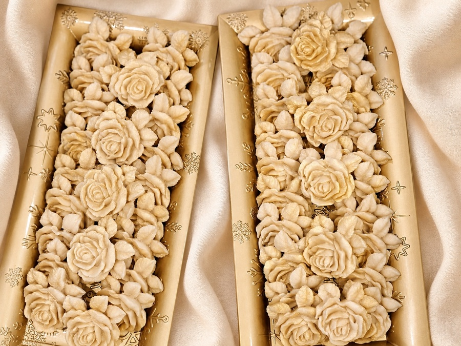
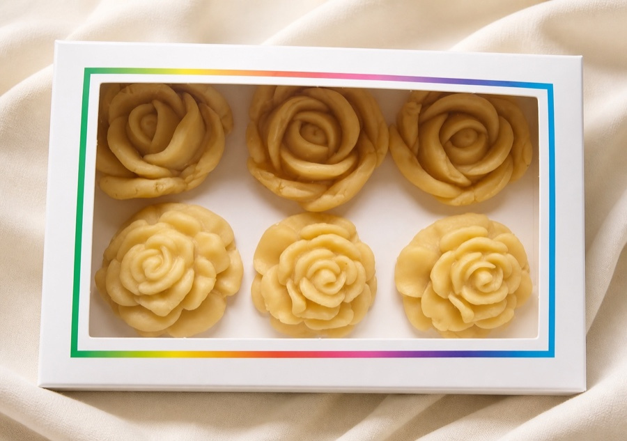
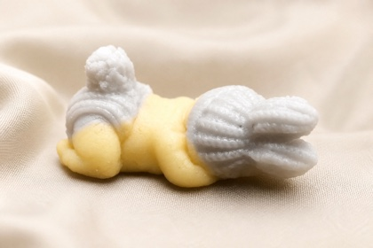
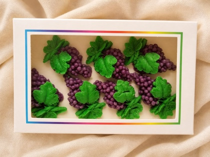
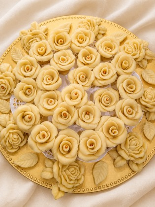
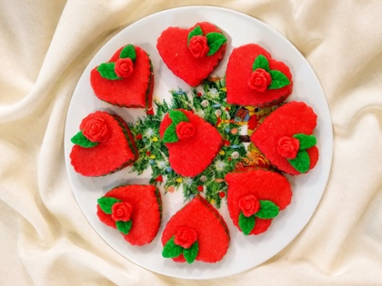
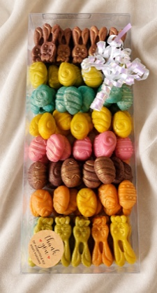
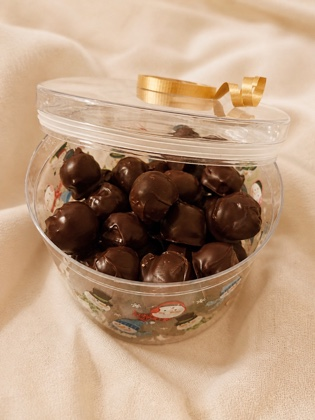

Marzipan sculpted to the shape of the day
Weddings · Baptisms · Communions · Parties · Gifts
Gluten-free · Dairy-free · Vegan Everything except the chocolate-dipped jars
Ajia shapes roses, sleeping babies, couples, chalices and fruit by hand. Made to order across greater Boston.
One rose. Or three hundred.
Any size means a single rose for a guest or a full tray for the middle of the room.
Sizes are estimates from Ajia's photographs until she confirms them.
Sculpted Rose
one piece, in a guest's hand
approx. 2 in
Long Rose Tray
a tray of them, carried in whole
approx. 16 × 7 inShe makes the piece the occasion asks for
The baby for the baptism, the couple for the wedding, the chalice for the communion. Not a generic sweet with a ribbon on it.
Everything here was shaped by one pair of hands
There is no production line. Roses turn petal by petal, grapes bead by bead, and baby bonnets are scored to look knitted.
Give her more notice and she can do more.

Made by hand
Every petal and detail is shaped one at a time.
- What it is made of
- Almonds and sugarWhich is why it happens to be gluten-free, dairy-free and vegan: not a special version, just what marzipan is.
- Where she delivers
- Greater BostonPickup and local delivery. Ask about your town when you send the cart.
- How far ahead
- Lead times to confirmLarge trays and full favour counts need the most notice. Send your date and she will tell you what is possible.
- How you order
- You send your cartBuild it from the catalogue, add your date and guest count, and Ajia replies with a firm quote. Nothing is charged here.
Tell her what the day is
Pick the pieces you want, or describe something that is not in the catalogue at all. Send a photograph with it and she will tell you whether she can make it.





